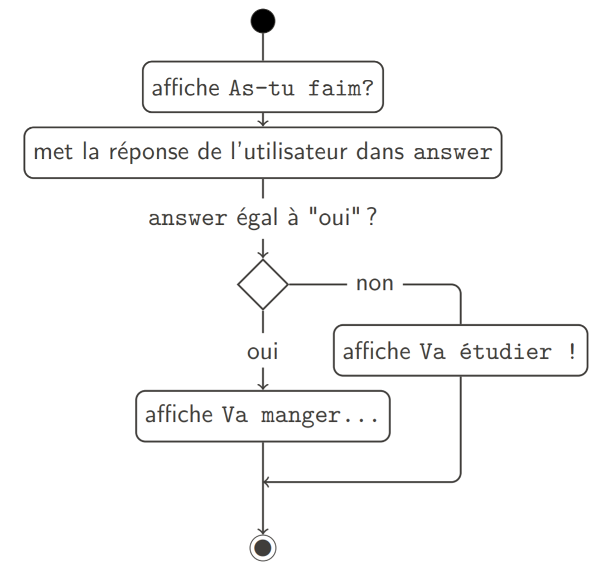
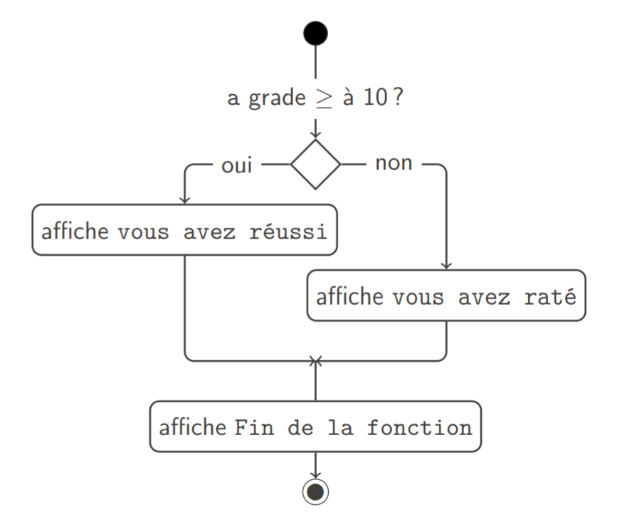

modifier le flux d’exécution du programme
Sur base de conditions
answer = input("As-tu faim? ")
if answer == "oui":
print("Va manger un hamburger !")
else:
print("Va étudier !")
Contrôle de flux

Instruction if
Exécution d’un bloc de code si une
condition est vérifiée
Dans tous les cas, le programme continue après l’instruction
if
def negatif(x):
if x < 0:
print("x est négatif !")
print("Fin de la fonction")
negatif(-5)
x est négatif !
Fin de la fonction
Instruction if-else
Exécution alternative si la condition n’est pas
vérifiée
Dans tous les cas, le programme continue après le
if-else
def inform(grade):
if grade >= 10:
print("vous avez réussi")
else:
print("vous avez raté")
print("Fin de la fonction")
inform(9.5)
vous avez raté
Fin de la fonction

Instruction if-elif-else
Définition de plusieurs alternatives disjointes
Dans tous les cas, le programme continue après le
if-elif-else
def alert(temp):
if temp < 100: # si temp < 100
print("tout va bien")
elif temp <= 130: # si 100 <= temp <= 130
print("attention")
else: # si temp > 130
print("danger")
print("Fin de la fonction")
alert(126)
attention
Fin de la fonction
Instruction if-elif-else
Exemple
from math import sqrt
# Renvoie la LISTE des racines de ax**2+bx+c=0
def bazooka(a, b, c):
# Calcul du discriminant
delta = b ** 2 - 4 * a * c
# Calcul des racines
if delta > 0:
return [
(-b + sqrt(delta)) / (2 * a),
(-b - sqrt(delta)) / (2 * a)
]
elif delta == 0:
return [-b / (2 * a)]
else:
return []
print(bazooka(1, 3, 2))
Instruction while
Répète un bloc de code tant qu’une condition est
vérifiée
Dans tous les cas, le programme continue après
while
def count(until):
n = 1
while n <= until:
print(n)
n = n + 1
count(5)
1
2
3
4
5
Exemple : tables de multiplication
def table(x):
i = 1
while i <= 10:
print(i, "x", x, "=", i*x)
i += 1
n = int(input("Entrez un nombre: "))
table(n)
Entrez un nombre: 7
1 x 7 = 7
2 x 7 = 14
3 x 7 = 21
4 x 7 = 28
5 x 7 = 35
6 x 7 = 42
7 x 7 = 49
8 x 7 = 56
9 x 7 = 63
10 x 7 = 70
Attention aux boucles infinies
Il faut que la condition de la boucle
puisse devenir fausse
Sinon elle ne s’arrête jamais
n = 1
while n <= 5:
print(n) # boucle infinie !!
n = 1
while n > 0:
print(n)
n += 1 # boucle infinie !!
Interruption de boucles
Le mot break met immédiatement fin à la
boucle.
# recherche le plus petit naturel non nul divisible par 38 et 46
n = 1
while True:
if n % 38 == 0 and n % 46 == 0:
break
n += 1
print(n, "est le plus petit nombre divisible par 38 et 46")
Le mot continue met immédiatement fin au
tour de boucle en cours
# affiche tous les nombres pairs plus petits que 100
n = 0
while n <= 100:
n += 1
if n % 2 != 0:
continue
print(n)
Programmation graphique
Ouvre une fenêtre de l'OS
Tourne jusqu'à ce qu'on quitte
boucle !
Permet d'afficher des formes, images, animation
Une animation est une succession rapide d'images
Pygame
Permet de créer un programme graphique
Non-inclus dans l'installation de Python
Il faut installer le package
Installation
Python peut
télécharger et installer automatiquement des packages
Pour installer Pygame :
&> python -m pip install pygame
Premier programme graphique
import pygame
# initialisation de pygame
pygame.init()
# demande une fenêtre de 800x600 pixels
screen = pygame.display.set_mode([800, 600])
# boucle jusqu'à ce qu'on quitte
while not pygame.event.peek(pygame.QUIT):
# dessine un cercle rouge centré en (100, 300) de rayon 20
pygame.draw.circle(screen, [255, 0, 0], [100, 300], 20)
# affiche l'image qui vient d'être dessinée
pygame.display.flip()
Animation
Pour animer le cercle, il suffit de le dessiner à une position un peu différente à chaque image.
import pygame
# initialisation de pygame
pygame.init()
# demande une fenêtre de 800x600 pixels
screen = pygame.display.set_mode([800, 600])
xCircle = 100
# boucle jusqu'à ce qu'on quitte
while not pygame.event.peek(pygame.QUIT):
# dessine un rectangle noir pour effacer l'image
pygame.draw.rect(screen, [0, 0, 0], pygame.Rect(0, 0, 800, 600))
# dessine un cercle rouge centré en (xCircle, 300) de rayon 20
pygame.draw.circle(screen, [255, 0, 0], [xCircle, 300], 20)
# déplace le cercle
xCircle += 1
# affiche l'image qui vient d'être dessinée
pygame.display.flip()